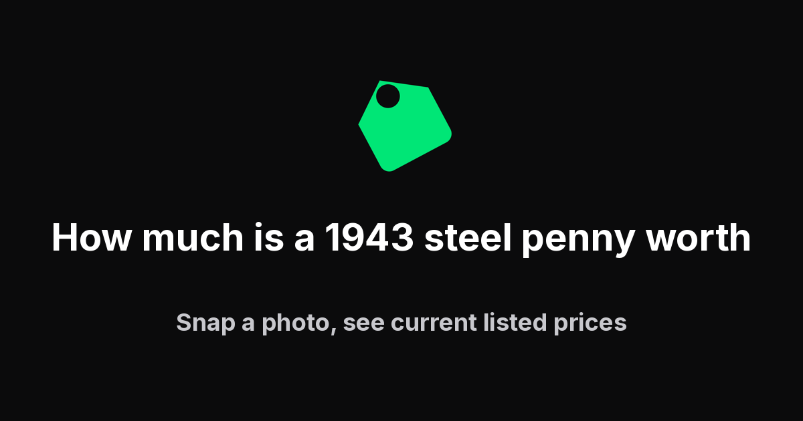

People often type how much is a 1943 steel penny worth after a grey Lincoln cent turns up in a jar of wheat pennies. The first instinct is to trust a social post about a copper 1943, or to assume that any silver-coloured wartime cent is automatically a rarity. That is how a typical zinc-coated steel cent gets talked about like an off-metal error, and how a genuine copper-coloured 1943, which needs careful identification, gets cleaned or listed as a confirmed rarity before anyone has checked the metal.
If you want a useful how much is a 1943 steel penny worth, photo-check the coin in your hand. Confirm the date, the mint mark, and whether it is attracted to a magnet, then look at a current listed range for that issue. That is what  How Much Is It Worth: Scanner is built to do.
How Much Is It Worth: Scanner is built to do.
A typical 1943 steel penny is a zinc-coated wartime Lincoln Wheat Cent, struck because copper was needed for the war effort. It is silver-grey when it is not heavily rusted, and it is attracted to a magnet. Most worn examples are modest. Value still depends on mint mark and condition. Rust or pitting is common on this wartime issue.
The mint mark sits on the obverse, under the date: none for Philadelphia, D for Denver, or S for San Francisco. Photograph both sides in even light, with the date and the mint mark sharp, and note whether a magnet attracts the coin. Take or upload up to three photos.
A typical 1944 cent is copper, not steel. Do not price a common 1943 steel cent as if it were a copper error, or a common 1944 copper cent as if it were steel. A steel cent does not have a useful silver or gold melt floor. The modest collector interest in a typical circulated 1943 steel cent is a small premium over the one-cent face value, unless you have a carefully identified error or an unusually sharp example. We will not invent a mint-by-mint chart, and we will not freeze an old published comment as if it were a live price list.
The variety people ask about is the 1943 bronze or copper cent, struck on a leftover copper planchet. Those coins are scarce, they are widely faked, and we will not invent a price for them. A magnet is a practical first test: a normal 1943 steel cent is attracted to a magnet, and a copper-alloy cent is not. That test does not prove a non-magnetic 1943 cent is genuine. Copper-plated steel fakes exist. If a 1943 cent does not stick to a magnet, get a specialist to look at it before you treat it as a rarity.
The app shows the identification first. If the date, mint, or metal looks off, you correct it before any price lookup. Then you see a Worth about figure, the listed range around it, a confidence level, and the live listings behind the number. Coin figures draw on Numista as well as current public listings. If the data is thin, the result is labelled as a rough estimate. The product will not invent a precise figure, and it is not a certified appraisal, an insurance valuation, or an offer to buy.
Want to try it? Start your free 3-day trial in the iPhone app at https://apps.apple.com/app/id6832980231. 3 free scans + 3-day unlimited trial. You can also scan it online free at https://howmuchisitworth.today/1943-steel-penny-value. On Android? Check https://howmuchisitworth.today/ for the Android release.
Mint mark and condition move a typical 1943 steel cent. Rust or pitting is common, and cleaning usually lowers collector value. Do not clean a rusty steel cent to "improve" it. Photograph both sides as they are, and mention rust honestly.
The range the app shows comes from current public listings, which are asking prices. A sold price can be lower, and asking prices for "1943 copper pennies" are often wishful or wrong about the metal. When we find enough listings for a typical steel cent, we show them so you can see the spread.
You can adjust the condition in a tap and watch the value update. If you decide to sell, you can copy a ready-made listing, with Quick sale, Fair price, or Top dollar, and save the scan to a collection. A typical worn 1943 steel cent is a modest sale, often as part of a wheat-penny lot or through a coin shop. A suspected copper 1943 should not go into a casual listing as a confirmed rarity.
Viral "this 1943 penny is worth a fortune" posts often skip the magnet test and skip condition. We will not invent a social-media price for the copper error, and we will not treat every steel cent as if it were that error. Start with the coin in front of you: date, mint mark, magnet, and a current listed range.
The app is free to start. Start your free 3-day trial. 3 free scans + 3-day unlimited trial.
If you are trying to find how much is a 1943 steel penny worth, photo-check yours. Download the app and scan your first coin free, or start at https://howmuchisitworth.today/1943-steel-penny-value.
I also wrote a Google Docs walkthrough of the same photo method: How Much Is It Worth: Scanner.